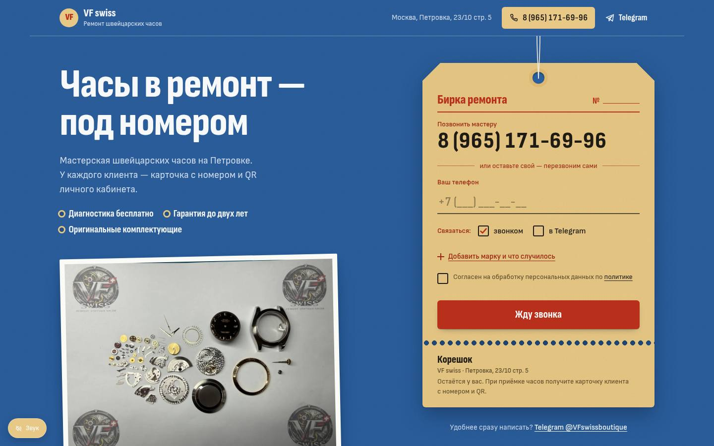

Бирка ремонта
Сдать часы — как сдать вещь под номер: вся страница построена вокруг ремонтной бирки, которую заполняешь одним полем.
Что посмотреть
- Заявка — это бирка прямо на первом экране: телефон и «Жду звонка»
- Путь часов от приёмки до выдачи напечатан на обороте бирки
- Карточка клиента K-0128 с QR — та же система личных кабинетов, что в приложении мастерской